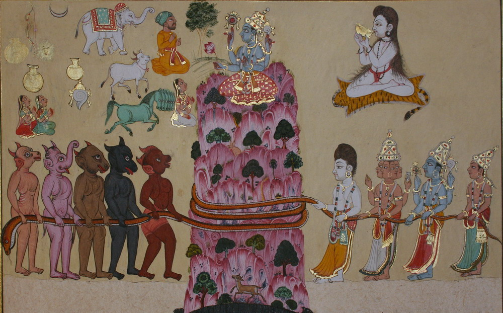
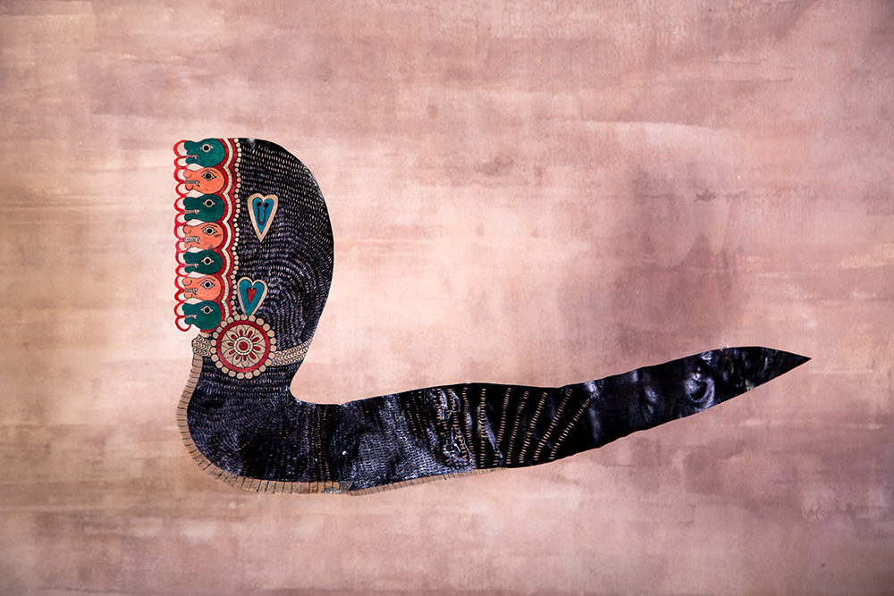
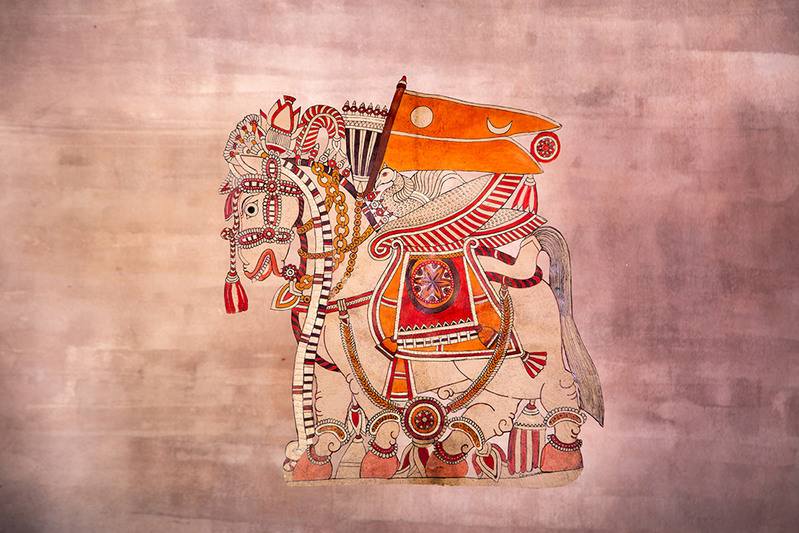
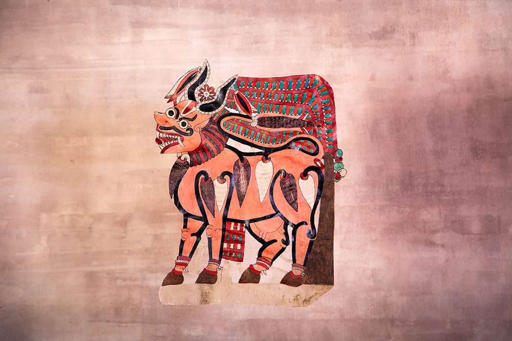
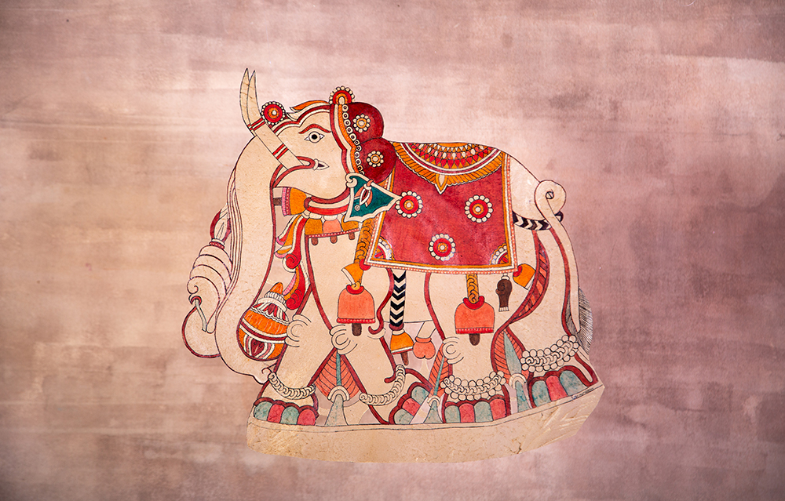
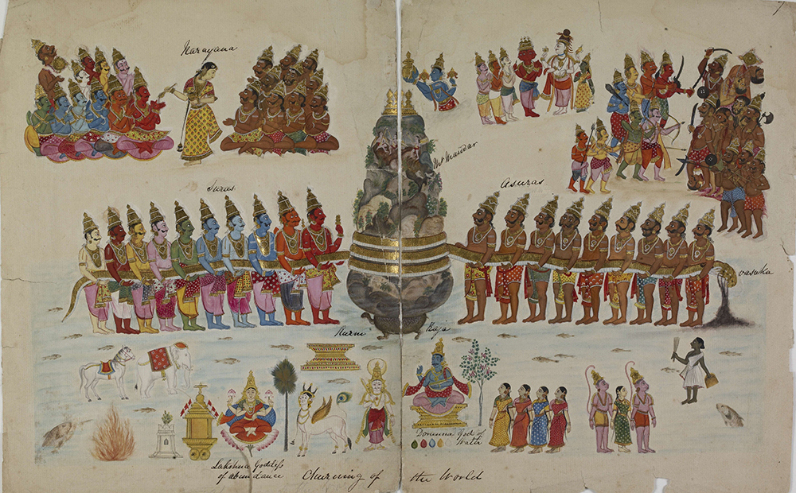
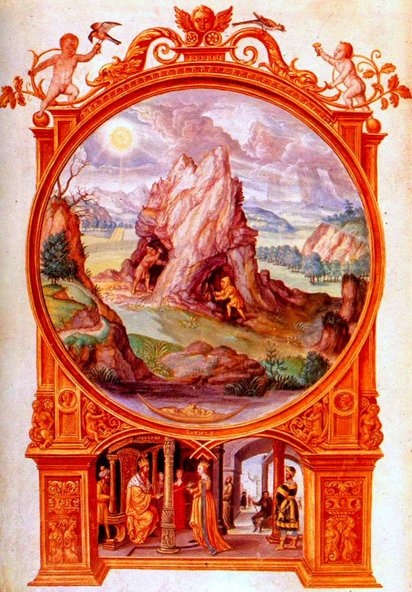
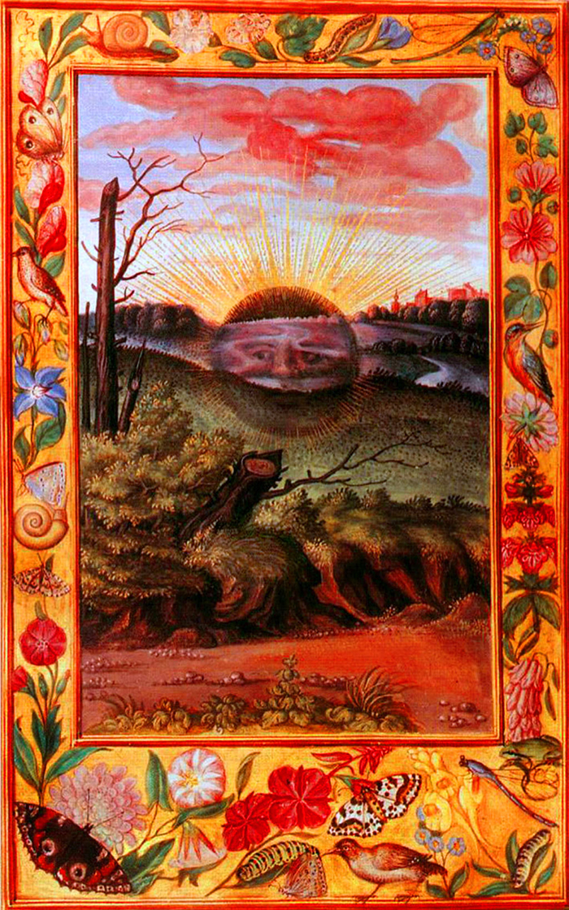
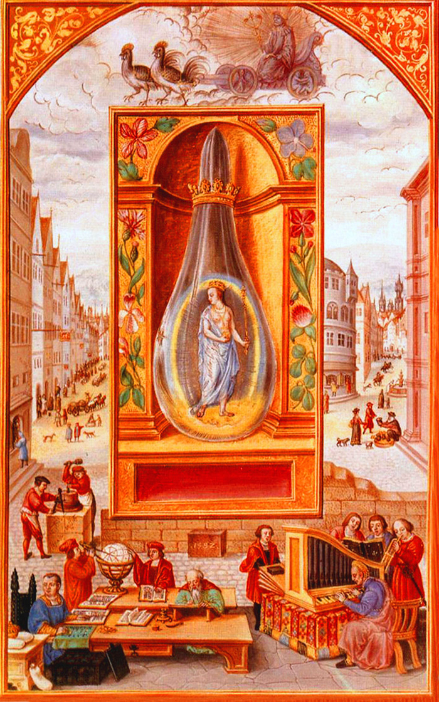
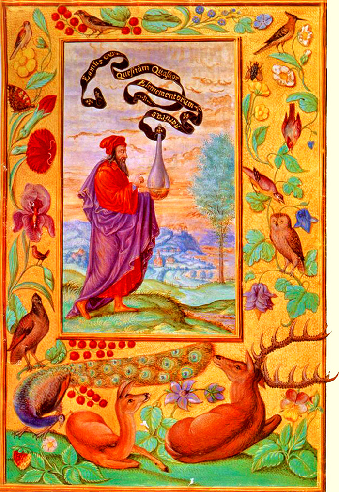

INFO
In der Unendlichen Bibliothek sollen menschliche Geschichten in eine weit größere Erzählung eingebettet werden, die die Geburt unseres Planeten und die Evolution allen Lebens umfasst.
“Wenn eine Bibliothek einfach eine systematische Textsammlung darstellt, dann sind Bibliotheken in der Kulturgeschichte weitaus älter als Bücher. In jedem Land besteht eine Tradition von Legenden, Gleichnissen, Rätseln, Mythen und Gesängen, die lange vor ihrer Niederschrift existierten. Diese Texte wurden als Erinnerungen aufbewahrt und von Generation zu Generation durch Tanz, Gesten und mündliche Überlieferung weitergegeben.”
*
STUART KELLS
The Library: A Catalogue of Wonders, 2017
DIE
GEBIETE
Innerhalb der Unendlichen Bibliothek können Sie kleinere Teil-Bibliotheken (Gebiete) entdecken, die jeweils einem bestimmten Wissensystem gewidmet sind. Erfahren Sie mehr, indem Sie auf die Symbole unten klicken.
BIBLIOTHEK DER SCHATTEN
Togalu gombeyaata in Karnataka, Indien
Die Bibliothek der Schatten ist ein Virtual-Reality-Erlebnis, das sich mit sündindischem Schatten-Puppenspiel beschäftigt. Klicken Sie auf EINLEITUNG, um einen kurzen Text zu diesem Erlebnis zu lesen; auf GALERIE, um Bilder zu sehen; auf PODCAST, um ein Interview mit unserer Expertin Anarupa Roy und dem Puppenbauer Gunduraju zu hören; oder auf ESSAY, um einen vertiefenden Fachbeitrag zu diesem Thema zu lesen.
Eine Kerze anzuzünden heißt, einen Schatten zu werfen.
Ursula K. Le Guin
Willkommen in der Bibliothek der Schatten, ein Virtual-Reality-Erlebnis, das sich mit Togalu gombeyaata beschäftigt, einer alten Kunstform und lebendigen Volkstradition aus Südindien, genauer aus Karnataka. Das Schattenspiel entstand im 1. Jahrhundert v. Chr in Indien und China. Als Medium spielt es mit den zwei ursprünglichsten Elementen des Universums, Dunkelheit und Licht, und ist ein Vorläufer aller anderen Medien, beispielsweise Filmtechnik und virtuelle Realität, die Licht, Bilder und Projektionsflächen kreativ nutzen.
In der heutigen Welt gibt es für die meisten Menschen keine echte Dunkelheit mehr. Die Städte und Häuser, die Sie bewohnen, sind in künstliches Licht getaucht, und Sie verbringen jeden Tag Stunden vor hintergrundbeleuchteten Telefonen, Computern oder Fernsehbildschirmen. Deshalb können sich nur wenige von Ihnen vorstellen, wie Ihre Vorfahren einst mit der Dunkelheit in Beziehung standen. Für diese waren Schatten nicht einfach nur die Abwesenheit von Licht, sondern Teil einer Welt, die voller Präsenz, Geheimnisse und Absichten war. Dazu gehörten Geister, Gespenster und weitere Wesen aus anderen Welten. Togalu gombeyaata schafft Kunst aus der magischen Substanz der Schatten: Puppenspieler erwecken Figuren zum Leben, lassen sie laufen, tanzen, kämpfen und lachen, während sie von Musik und Erzählungen begleitet werden.
Die Bibliothek der Schatten zeigt vier Puppen aus dem Samudra Manthan, einem populären Hindu-Epos, das die Geschichte des ewigen Kampfs zwischen den Göttern (devas) und den Dämonen (asuras) erzählt. Nachdem die Götter ihre Macht verloren haben, bitten sie die Dämonen, ihnen bei der Beschaffung des Unsterblichkeitselixiers (Amrita) zu helfen, um ihre ursprüngliche Macht wiederzuerlangen. Zu diesem Zweck müssen die Götter und die Dämonen mit der großen Schlange Vasuki zusammenarbeiten, um einen kosmischen Ozean voller Milch zu buttern. Dabei steigen Schätze an die Oberfläche, darunter die Kuh Kamadhenu, die Wünsche erfüllt, der Elefant Airavata mit vier Stoßzähnen und das geflügelte Pferd Uchchaihshravas. Als die Götter endlich das Elixier erlangen, bekommen auch die Dämonen einen kleinen Anteil, weshalb der Kampf zwischen Gut und Böse bis zum heutigen Tag andauert.
Betreten Sie die Bibliothek der Schatten und folgen Sie der Schlange Vasuki, um die Welt des Togalu gombeyaata zu erleben. Trommeln und tanzen Sie, um die Puppen des Samudra Manthan zum Leben zu erwecken. Um mehr über diese Bibliothek zu erfahren, hören Sie den Podcast oder lesen Sie den Essay von Anurupa Roy, dem Experten für südindisches Puppenspiel in der Unendlichen Bibliothek.
GALERIE
 Illustration der Szene aus dem Samudra Manthan, in der der Ozean aus Milch gebuttert wird. Quelle: Wikipedia Commons.
 Gemälde der Szene aus dem Samudra Manthan, in der der Ozean aus Milch gebuttert wird. Künstler und Datum unbekannt. Quelle: Wikipedia Commons; Lizenz: Creative Commons Attribution 3.0 Unported.
 Die Schlange Vasuki – Lederpuppe von Gunduraju-ji. Fotografie: Sukhman Dhillon.
 Das geflügelte Pferd Uchhaisravas – Lederpuppe von Gunduraju-ji. Fotografie: Sukhman Dhillon.
 Die wunscherfüllende Kuh Kamadhenu – Lederpuppe von Gunduraju-ji. Fotografie: Sukhman Dhillon.
 Der vierzahnige Elefant Airavata – Lederpuppe von Gunduraju-ji. Fotografie: Sukhman Dhillon.
podcast
Anurupa
Roy
Puppenspielerin, Puppengestalterin
und Regisseurin für Puppentheater
Anurupa Roy ist Puppenspielerin, Puppengestalterin, Regisseurin für Puppentheater und Gründerin des Katkatha Puppet Arts Trust. In ihrer Arbeit verwendet sie Puppen für psychosoziale Interventionen in Konfliktgebieten wie Kaschmir, Sri Lanka und Manipur sowie in Jugendstrafanstalten. Roy hat mit Jugendlichen und Frauen in ganz Indien gearbeitet und dabei Puppen eingesetzt, um das Bewusstsein für HIV/AIDS und Genderfragen zu fördern. Roy wurde mit dem Ustad Bismillah Khan Yuva Puraskar für Puppenspiel, dem Sangeet Kala Kiran Puraskar und dem Shankar Nag Theatre Award ausgezeichnet.
Indisches Schattenpuppentheater
Es gibt eine alte griechische Geschichte, in der die Götter darüber diskutierten, wo sie das größte Geheimnis des Lebens, die höchste Weisheit, verstecken sollten. Einige schlugen den höchsten Berg vor, andere argumentierten, dass die Menschen diesen schließlich erklimmen würden, einige schlugen dann den tiefsten Ozean vor, aber das wurde abgelehnt. Letztendlich würden die Menschen auch dorthin gelangen. Schließlich beschlossen die Götter, die Weisheit vor aller Augen zu verstecken, nämlich im Geist der Menschen selbst – in ihren Träumen. Ich glaube, dass die Götter diese Weisheit auch in epischen Erzählungen versteckt haben.
Das traditionelle Puppentheater ist gekennzeichnet durch solche Erzählungen, die innerhalb der Familie oder Verwandtschaft während Hunderten oder gar Tausenden von Jahren von einer Generation zur nächsten weitergegeben werden. Jede Generation fügt dann etwas Eigenes hinzu und gibt es weiter, destilliert und verfeinert es und passt es wechselnden Publikumsgruppen und Auftraggebern an. Somit ist Tradition ein sich ständig veränderndes Phänomen und nicht in der Zeit erstarrt. An dem Tag, an dem sie unbeweglich wird, beginnt sie zu sterben.
Traditionelle darstellende Kunstformen sind sehr stark in ihrer Kulturgeschichte, ihren sozialen Praktiken und ihren sprachlichen Kontexten verwurzelt. Sie sind vielschichtige und facettenreiche Lebenswelten. Die Evolution des Schattenpuppenspiels und die Rolle des Puppenspielers in Indien ist ein lebendes Zeugnis dieser Vielschichtigkeit.
In Indien gibt es keine einheitliche Form des traditionellen Puppenspiels. Es gibt (nachweislich) 18 lebendige Formen in verschiedenen Teilen Indiens, unter anderem Handschuh-, Stab-, Schnur- und Schattenpuppen. Daneben gibt es mehrere neue Gruppen von Puppenspielern, die keine Generationspuppenspieler sind und mit einer Mischung aus alten und neuen Techniken arbeiten. Sie werden – manchmal etwas umstritten – als “moderne” Puppenspieler bezeichnet. Die Situation der Puppenformen variiert stark von Region zu Region in Indien.
Der wichtigste Aspekt des traditionellen Puppenspiels ist sein erzählerischer Kontext, der tief in den mündlichen Versionen von Epen wie dem Ramayana und dem Mahabharata, Geschichten aus den Puranas und regionaler Folklore verwurzelt ist. Diese Erzählungen bestimmen die Art der Aufführung (Dialoge, Stylisierungen in Sprache, Musik und Gesang), die Gestaltung der Puppen (Farbe, Form, Größe, Material), die Ästhetik der Form und ihre Verbindung zum Publikum. Die Geschichte steht also im Mittelpunkt, und die Puppen illustrieren in der Regel die Erzählung. Die Ästhetik gleicht oft der von regionalen Skulpturen, Gemälden und anderen darstellenden Künsten. Diese sind untrennbar miteinander verbunden. Ein traditionelles Publikum ist bereits mit der Geschichte, den Liedern, den Dialogen und Scherzen vertraut. Die Rolle des Puppenspielers war und ist mehr als die eines bloßen Unterhalters. Er ist Schamane, Heiler, Geschichtenerzähler, Weiser, Träger einer kollektiven Geschichte, zeichnet Parallelen zwischen lokaler Politik und Epen, verbindet Philosophie und soziale Realitäten. Sein fundiertes Wissen über mündliche Erzählungen einerseits und soziokulturelle Realitäten andererseits ermöglicht es ihm, den Raum zwischen Publikum und mythischen Figuren zu überbrücken. Meiner Meinung nach steht er als Träger der Erzählung im Mittelpunkt der Aufführung, nicht die Puppen.
Das Mahabharata und das Ramayana werden oft als lineare Texte betrachtet, die von einem einzigen Autor zu einer bestimmten Zeit geschrieben wurden. Tatsächlich wurden die Geschichten aber über mehrere Jahrhunderte weitergegeben und haben verschiedene Autoren, Einfügungen und Versionen. Eine “monolithische” Sichtweise dieser Texte schmälert ihre Tiefe und ihren unvorstellbaren Reichtum. Allein das Ramayana hat 300 Versionen! Die mündlichen Versionen dieser Epen werden durch das Puppenspiel veranschaulicht. Die darstellenden Künste sind ein wichtiges Medium, um diese Sammlung von Weisheit zu vermitteln. Um ein einfaches Beispiel zu nennen: In den schriftlichen Versionen des Ramayana lesen wir meist von einem einzigen Ravana oder dem zehnköpfigen König von Lanka, aber in den mündlichen Erzählungen hören wir von sechs verschiedenen Ravanas, Dash-kantha, dem zehnköpfigen, Shata-kantha, dem hundertköpfigen Ravana, den beiden Brüdern Mahi Ravana und Ahi Ravana, sowie Chayya Ravana und Maya Ravana als Hologramme des zehnköpfigen Ravana. Selbst die Geschichte des allgemein bekannten zehnköpfigen Ravana hat in jeder Version eine andere Vorgeschichte.
Die südlichen Bundesstaaten Kerala, Karnataka, Tamil Nadu und Andhra Pradesh und der östliche Bundesstaat Orissa haben ihre eigenen Arten des Schattenpuppenspiels. Die vier südlichen Bundesstaaten haben ihre Wurzeln im Schattenpuppenspiel Chamrachiye Bahuliye aus Maharashtra im Westen Indiens, das heute nur noch selten zu sehen ist. Es wird angenommen, dass die Puppenspieler von der Küste Maharashtras nach Karnataka und dann nach Tamil Nadu reisten. Dies geht aus der gemeinsamen Sprache “Arré” hervor, einer alten Version von Marathi, die von den Puppenspielern all dieser Bundesstaaten noch heute gesprochen wird. Vor etwa tausend Jahren lud der Maharadscha des Königreichs Palghat (heute ein Distrikt im Bundesstaat Kerala) Gelehrte, die Experten des Kamba Ramayana aus Tamilnadu waren, nach Kerala ein, um vor den Bhadrakali-Tempeln in Palghat Puppentheater einzurichten. Auch heute noch treten während des Bhadrakali-Fests die Pullavars (Puppenspieler/Gelehrte) in den “Kootamadams” auf, den Puppentheatern, die vor dem Allerheiligsten der Tempel errichtet wurden. 83 solcher Theater werden jedes Jahr von Februar bis Mai zum Leben erweckt, wobei Episoden des Kamba Ramayana während sieben, elf, 14, 21 oder 64 Nächten von Sonnenuntergang bis Sonnenaufgang aufgeführt werden. Um die Lampen des Puppentheaters zu entzünden, wird das Feuer aus dem Heiligtum der Göttinnen verwendet. In der Kamba-Ramayana-Version ist Ravana nicht der Bösewicht, sondern der verwunschene Türwächter von Vaikuntham, der als Ravana gemeinsam mit seinem Bruder Kumbhakarna wiedergeboren wird, um dann von Vishnus Avatar Ram befreit zu werden.
In Karnataka haben die Schatten des Puppenspiels (Togalu Gombeyata) lebhafte Farben, traditionellerweise schwarz, rot und weiß. Es gibt drei Arten von Puppen in Schattenform: die zusammengesetzten Bildpuppen (Jamgat Bavli), bei denen ein Bild oder eine Serie von Bildern eine Geschichte erzählt wie in einem Comic; die Einzelbild- bzw. Figurenpuppen (Ikpat Bavli), die keine Gelenke haben; und die Einzelfigurenpuppen mit Gelenken (Haathpheruthali Bavli). Die Puppenspieler gehören der Gemeinschaft der Sillakayata an, ursprünglich ein Jäger-und-Sammler-Volk, das Schattenpuppen aus Leder herstellte und damit Vorstellungen gab. In ihren Geschichten treten sie als der Clown “Sillakayata” auf und leiten ihren mythischen Ursprung auf die königlichen Wächter von Rama zurück. Die Geschichte besagt, dass Surpanakha, die Schwester des besiegten Königs Ravana, verkleidet zu Sita kommt und darum bittet, sie als Dienstmädchen anzustellen. Sita stellt sie an, und mit der Zeit kommt Surpanakha der Königin näher, indem sie ihr Geschichten erzählt. Eines Tages fragt sie Sita, ob sie sich an Ravana erinnere, und Sita antwortet, sie habe Ravana nie gesehen. Surpanakha bleibt hartnäckig: “Oh Königin, du musst ihn doch einmal gesehen haben? Hat er dich nicht jeden Tag besucht? Wie kannst du ihn nie gesehen haben?” Sita gibt schließlich nach und sagt, dass sie einmal seinen Zeh gesehen habe. Auf Surpanakhas Drängen hin zeichnet Sita diesen Zeh aus dem Gedächtnis auf ein großes Blatt Papier. Surpanakha, eine erfahrene Zauberin, zeichnet den Rest ihres Bruders und erweckt ihn zum Leben. Dies ist Chhaya Ravana, ein Schatten-Ravana, der seinen Tod rächen will. Deshalb versteckt er sich unter dem Bett. Als Ram in sein Schlafgemach zurückkehrt, um sich auszuruhen, springt Ravana hervor, um sich zu rächen, aber die Wachen bekämpfen und überwältigen ihn. Daraufhin wird er in kleine Stücke zerschnitten und als Puppe zusammengenäht. Auf diese Weise entstanden die Schattenpuppen.
In Tamil Nadu ist die undurchsichtige Schattenpuppe namens Thol Bommalata größer und bunter. “Thol” bedeutet Schatten, “bomba” oder “gomba” bedeutet Puppe und “latam” bedeutet Tanz, also wörtlich übersetzt “Schatten-Puppen-Tanz”. Die Puppen sind üblicherweise individuelle Figuren, und ein Puppenspieler spielt alle Puppen, indem er seine Stimme für alle Figuren ändert, singt und mehrere Instrumente spielt. Manchmal wird er auch von einem Harmoniumspieler unterstützt, und er kann einen Assistenten haben, der ihm die Puppen reicht. In einer durchschnittlichen Vorstellung sind mehr als zwei Puppen gleichzeitig auf der Bühne, so dass die Vorstellungen durch schnelle Wechsel gekennzeichnet sind. Tier- und zahlreiche Gauklerfiguren sorgen für sehr zeitgemäße und unterhaltsame Vorstellungen.
Die Tolu Bommalatam in Andhra Pradesh sehen ihren Tamilischen Verwandten ähnlich, außer dass sie die größten Schattenpuppen in der Familie sind. Die Dämonin Lankini, die die Insel Lanka bewacht, kann vier Meter groß sein! Die meisten Puppen sind zwischen 1,5 und 2,5 Meter groß, und ein Puppenspieler spielt jeweils eine Figur. Die Puppen haben viele Gelenke, so dass sich ihre Beine, Arme, Köpfe und manchmal sogar ihre Taillen bewegen. Hinter der Bühne tanzt der Puppenspieler, auf einem Holzbrett balancierend, mit seiner Puppe, gibt den Rhythmus vor und sorgt dafür, dass sich die Beine der Puppe bewegen, ohne sie zu berühren. In dieser Version, die auf dem Molla-, Kamba- und Adbhuta-Ramayana basiert, ist die Geschichte von Ahi Ravana und Mahi Ravana zu hören, zwei Brüdern und Klassenkameraden des Königs von Lanka aus Kindertagen. Er bringt sie mit einer List dazu, sich dem Krieg gegen Ram anzuschließen. Sie entführen Ram und Lakshman, und Hanuman muss ihnen in die Unterwelt folgen, um diese zu retten.
Das Ravanchayya in Orissa hat – wie in Kerala – nur schwarze und weiße Puppen. Es handelt sich um kleine Puppen, die mit Tricks arbeiten, wie etwa kleine Versionen derselben Figur, um eine weite Entfernung vorzutäuschen, bzw. große Versionen, um Nähe darzustellen. Es basiert auf dem Bichitra Ramayana, das Bishwanath Khuntia für Theatervorstellungen geschrieben hat.
Ich hoffe, dass wir in naher Zukunft mehr Anerkennung für diese Kunstform in Indien sehen werden. Ausbildungsmöglichkeiten, bei denen sowohl Generationspuppenspieler aus Familien, die traditionelle Formen praktizieren, als auch neue Künstler mit einem nicht-traditionellen Hintergrund zu qualifizierten Fachleuten in der Kunst des Puppenspiels ausgebildet werden. Kontakt mit Zielgruppen außerhalb des traditionellen Publikums könnte dazu führen, dass die Vorurteile, die diese Kunstform umgeben, stärker hinterfragt werden. Vielleicht wird dadurch das Selbstwertgefühl der Puppenspieler gestärkt und die Kinder von Generationspuppenspielern dazu ermutigt, ihre Kunst weiterhin zu praktizieren und sich für Innovationen zu öffnen. Mit Projekten wie dieser virtuellen Bibliothek und einer verstärkten digitalen Präsenz des traditionellen indischen Puppentheaters wird vielleicht endlich das Etikett “aussterbende Kunst” in Frage gestellt. Und vielleicht wird dies auch endlich einen politischen Kurswechsel nach sich ziehen. Sicher ist jedoch, dass es zu neuen Diskursen rund um das Puppentheater und zu einem starken Anreiz für Neuerungen im gesamten Puppentheater in Indien führen wird.
BIBLIOTHEK DER ELEMENTE
Der himmlische Garten der Alchemie des Mittelalters
Die Bibliothek der Elemente ist ein Virtual-Reality-Erlebnis, das sich mit der europäischen Alchemie des Mittelalters beschäftigt. Klicken Sie auf EINLEITUNG, um einen kurzen Text zu diesem Erlebnis zu lesen; auf GALERIE, um Bilder zu sehen; auf PODCAST, um ein Interview mit unserem Experten Jakub Hlaváček zu hören; oder auf ESSAY, um einen vertiefenden Fachbeitrag zu diesem Thema zu lesen.
Die Natur erfreut sich der Natur, die Natur bezwingt die Natur, die Natur beherrscht die Natur.
Physika kai Mystika / Pseudo-Demokrit (1. Jh. n. Chr.)
Willkommen in der Bibliothek der Elemente, ein Virtual-Reality-Erlebnis, das sich mit der europäischen Alchemie des Mittelalters beschäftigt. Es gibt keine einfache Definition von Alchemie, welche sich in verschiedenen, voneinander unabhängigen Formen in Indien, China, der arabischen Welt und Europa entwickelte. Vereinfacht gesagt ist Alchemie eine Kunstform und Praxis, die sich mit der Natur und ihren Umwandlungen beschäftigt. Ihre Wurzeln liegen in der vorliterarischen Zeit; das Wissen über sie wird mithilfe von Symbolen, Träumen, Ritualen und später auch Kodexen weitergegeben.
Sich heutzutage mit der Alchemie zu beschäftigen ist deshalb schwierig, weil sie mit der heutigen wissenschaftlichen Weltsicht kollidiert, die davon ausgeht, dass Materie und Kosmos tot seien. Während des größten Teils der Menschheitsgeschichte wurden Materie und Kosmos als lebendig betrachtet. Der Abbau von Roherzen und die Kunst ihrer Umwandlung in Metalle, ein Vorgehen, das Metallurgie genannt wird, galten als heilige Handlungen. Heute hingegen sind Metalle und ihre Bedeutung eine Selbstverständlichkeit. Es ist zum Beispiel unwahrscheinlich, dass Sie Ihr Mobiltelefon, das aus Kupfer, Tellur, Lithium, Kobalt, Mangan und Wolfram besteht, für ein heiliges Gerät halten, das mit dem Planeten und seiner Geschichte verbunden ist. Und Sie glauben auch nicht, dass meine Bibliothek, die vom Internet mit seinen Hunderten von Millionen Kilometern Metallkabeln, die sich über Ozeane und Kontinente erstrecken, abhängig ist, eine göttliche Erscheinung ist.
Der mittelalterliche Alchemist sah das anders. Die Umwandlung von Roherzen in veredelte Metalle mithilfe von Feuer galt als Nachahmung des kosmologischen Fortschreitens – vom Ur-Chaos zu höheren Formen des Bewusstseins. Indem der Alchemist die Perfektion dieser Metalle verfolgte, verfolgte er seine eigene Perfektion. Die Befreiung der Metalle vom unedlen Stein wurde gleichgesetzt mit der spirituellen Befreiung des Alchemisten selbst. Freiheit, Erleuchtung und sogar Unsterblichkeit galten als reale Möglichkeiten, denn die Umwandlung von Metallen bedeutete, mit dem Schöpfer zusammenzuarbeiten und die Materie von den Gesetzen der Zeit zu befreien. Die vollständige Umwandlung der materiellen und der spirituellen Welt wurde das Große Werk genannt.
Betreten Sie die Bibliothek der Elemente und erleben Sie drei Stufen alchemistischer Umwandlung: Nigredo, Albedo und Rubedo. Um mehr über diese Bibliothek zu erfahren, hören Sie den Podcast oder lesen Sie den Essay von Jakub Hlaváček, dem Experten für alchemistische Philosophie in der Unendlichen Bibliothek.
GALERIE
 Illustration “Bergleute graben einen Hügel aus” aus Splendor Solis. Quelle: bordel.haghn.com
Illustration “Das Treffen von Sonnenkönig und Mondkönigin” aus Splendor Solis. Quelle: bordel.haghn.com
 Illustration “Die schwarze Sonne” aus Splendor Solis. Quelle: bordel.haghn.com
 Illustration “Merkur – Die weiße Königin” aus Splendor Solis. Quelle: bordel.haghn.com
Illustration “Mond – Der rote König” aus Splendor Solis. Quelle: bordel.haghn.com
 Illustration “Philosoph mit Flasche” aus Splendor Solis. Quelle: bordel.haghn.com
podcast
Jakub
Hlaváček
Jakub Hlaváček, MA, PhD, studierte Religionswissenschaften an der Philosophischen Fakultät der Karls-Universität (PhD in Vergleichender Literaturwissenschaft). Er ist Leiter des Prager Verlags Malvern. Seine Spezialgebiete sind Philosophie und Alchemie in der Zeit der Renaissance und der frühen Neuzeit. Er ist Autor zahlreicher Übersetzungen (z. B. M. Ficino, G. Bruno, H. Khunrath, M. Maier, R. Daumal, R. Alleau, usw.) und Artikel über Alchemie, Literatur und die Rolle der Fantasie. Zu seinen jüngsten Veröffentlichungen gehören The Signs of Things: The Renaissance Teaching on the Signatura Rerum (2020) und Asklepios (2019), beide in Zusammenarbeit mit Martin Žemla.
Die Tradition von Alchemie und schöpferischer Imagination
Alchemie, auch bekannt als “Wissenschaft der Musik”, “fröhliche Wissenschaft” oder “himmlische Gartenkunst”, ist ein geheimnisumwitterter Begriff, der eine Einweihung in vergessene Mysterien verspricht. Historisch gesehen geht Alchemie zurück auf die Mysterien der ersten Metallurgen, die heiligen ägyptischen Tempellehren, die griechisch-alexandrinische Hermetik sowie die byzantinischen und arabischen alchemistischen Praktiken (Wissenschaft des Gleichgewichts). Als Tradition ist uns die Alchemie am ehesten in der Form bekannt, die mit dem Christentum in Verbindung gebracht wird, zum Beispiel in den Lehren der Rosenkreuzer. Im Westen weniger bekannt sind die gleichermaßen fortgeschrittenen und immer noch ungebrochenen Traditionen der chinesischen und indischen Alchemie. Für den Praktiker, der eher wenig bis gar kein Interesse an diesen getrennten Geschichten hat, ist Alchemie eine spirituelle und transformative Lehre, deren Ziel der “Stein der Weisen” ist: ein Heilmittel (sei es in Form von Pulver, Tinktur, essbarem Zinnober, trinkbarem Gold oder spagyrischer Quintessenz) oder eine Transformation des Bewusstseins, deren Wirkung nicht auf den Körper beschränkt ist, sondern sich auf die Seele und den Geist erstreckt und sich in allen Bereichen der Natur manifestiert, von den Mineralien bis zu den Menschen. Mit anderen Worten, die alchemistische Suche entspricht einem Zustand von Körper, Geist und Seele, der Harmonie zwischen der menschlichen Seele und der Seele der Welt anstrebt.
Was die Alchemie von rein mystischen oder “spirituellen” Ansätzen unterscheidet, ist vor allem die liebevolle Arbeit oder Praktik mit Substanzen, Materie, Materialien (insbesondere mit Metallen), denn die Materie – in all ihren Möglichkeiten der Veredelung, Vervollkommnung und Belebung – spiegelt das innere Wachstum des arbeitenden Alchemisten wider und wirkt auf ihn zurück. Das bedeutet, dass der Alchemist, indem er Materie, insbesondere Metalle, verändert, sich selbst ändern kann. Warum Metalle? Laut der alchemistischen Kosmologie entspricht die niedrigste Form von Materie in der Aurea Catena (“Goldenen Kette”) oder Hierarchie der Schöpfung der höchsten Form von Materie; und obwohl Metalle die niedrigsten Ebene darstellen, verkörpern sie auch die größte Potenz und Heilkraft. Die Voraussetzung für dieses dialektische Zusammenspiel von Substanz und Geist liegt im Alchemisten selbst. Es geht um die “innere chymische Hochzeit” im “Herzen des Herzens”, also um die Art und Weise, wie das innere Selbst oder der Geist auf die Arbeit einwirkt. Dies wird auch als Schnittpunkt des Kreuzes bezeichnet, dessen horizontale Achse zwei gegensätzliche Pole verkörpert (männlich und weiblich, Animus und Anima) und dessen vertikale Achse das Medium des göttlichen Einflusses auf die Welt darstellt. Die innere Vereinigung des “männlichen und weiblichen Prinzips” ist somit die Opferung des eigenen Egos an den göttlichen Geist, die mysteriöse Passage durch den Tod und die Umwandlung des begrenzten Bewusstseins und seine Vorbereitung auf die Erleuchtung. Diese Umwandlung kann, wenn sie erreicht ist, auch als die Vermählung von Substanz und Geist verstanden werden.
Die Einheit von Geist und Körper – oder von göttlichen und materiellen Prinzipien –, die die Alchemisten betonen, ist für die Alchemie vielleicht sogar noch wichtiger als die aristotelische Vorstellung von der Umwandlung elementarer Eigenschaften, die am besten als Transmutation von Metallen verstanden werden kann. Mythisch gesehen erinnert diese Umwandlung an ein viel älteres, archaisches Konzept, in dem Metalle als organische, lebende Dinge betrachtet wurden, die im Schoß der Erde heranreiften. Laut stoischer Lehre ist Gott gleichbedeutend mit Substanz, mit anderen Worten: “Gott ist eine von der Substanz untrennbare Qualität und geht durch sie hindurch wie der Samen durch die Geschlechtsorgane.” Während die beiden Prinzipien von Geist und Körper (aktiv und passiv, Gott und Substanz, Schwefel und Quecksilber) in ihrer Macht oder Kraft als der manifestierte Kosmos verstanden werden, sind sie zur gleichen Zeit untrennbar verbunden. Auf diese Weise bilden sie eine Einheit. Diese Einheit wird in der Alchemie durch den Rebis (“Dublette”) symbolisiert: der Hermaphrodit des alchemistischen Großen Werks.
Seit der hellenistischen Alchemie wird der oben erwähnte traditionelle Prozess in drei grundlegenden Phasen vollzogen. Diese werden durch drei Farben symbolisiert: die Phase der Zersetzung und des Zerfalls der Substanz in die Urmaterie (schwarz oder nigredo), die Phase der Reinigung des Körpers (weiße Arbeit oder albedo), und die abschließende Phase der roten Arbeit (rubedo), welche das Erlangen des königlichen Steins der Weisen repräsentiert, was der vollständigen Umwandlung von Geist, Körper und Seele entspricht.
Eine Person, die sich nicht mit Alchemie auskennt, ist sicherlich beeindruckt von der großen Vielfalt an Bildern, die damit verbunden sind. Als Wissenssystem kommuniziert die Alchemie in Form von Bildern, Geschichten, Märchen, Träumen und Visionen. Dank des Vertrauens der christlichen Welt in die Macht und Wirksamkeit von Bildern konnte das mythologische Fundament des “Heidentums”, das in der Alchemie visualisiert wird, nicht nur fortbestehen, sondern sogar gedeihen, wenn auch mit Bedeutungen, die sich weiterentwickelten. Im esoterischen Christentum bildete genau dieses Vertrauen in Bilder sogar einen Gegenpol zu den ikonoklastischen Tendenzen innerhalb der modernen Wissenschaft, die aus einer konzeptuellen Version des Christentums hervorgingen, die die Losgelöstheit, Unzugänglichkeit und Transzendenz des verborgenen Gottes betonte.
Historisch gesehen ging die Alchemie zwar von einer Verbindung zwischen den beiden grundlegenden Dimensionen der Welt aus – der himmlisch-göttlichen und der irdisch-ephemeren –, doch hatte sie es als Philosophie schwer, akzeptiert zu werden, da sie im Widerspruch zu den von der etablierten christlichen Kirche vertretenen Vorstellungen stand. So wird beispielsweise in der Alchemie die Verbindung zwischen Geist und Körper als Inkarnation des Göttlichen verstanden. Dies steht in direktem Widerspruch zu den dualistischen Tendenzen, aus denen die entkörperlichte Perspektive der modernen Wissenschaft hervorgegangen ist – worin mit Recht die Geburt des westlichen Materialismus zu sehen ist. Gott, als reiner Geist gedacht, der ganz er selbst ist und nichts anderes, und zu dem man nur und ausschließlich durch den Glauben und nicht durch irgendwelche kognitiven Fähigkeiten in Beziehung treten kann, wurde auf diese Weise zum Vorläufer der “modernen abstrakten Konzeption der objektiven Realität.”
In der äußerst hermetischen Kunst der Alchemie, die sich auf die alten und okkulten Traditionen fokussiert, ist die vermittelnde Rolle des Planeten Merkur zentral. Merkur ist der Seelenführer und Götterbote: ein wandelbares oder flexibles Prinzip, dessen Reich die Imagination ist. In dieser Rolle wird Merkur als Vermittler verstanden zwischen der Welt der Phänomene, die den Sinnen zugänglich ist, und der Welt der engelhaften Intelligenz, die jenseitig ist und nur von einem höheren Sinn erreicht werden kann. Wie ein Meditierender betritt der Alchemist die Welt einer alchemistischen visionären Realität, indem er sich in seinem Inneren in einen Raum begibt, in dem alles Äußere zum Inneren wird.
Doch die imaginierte Welt oder die Welt der Imagination ist nicht das jungianische kollektive Unbewusste: ein von Carl Jung eingeführter Begriff, der das Unbewusste als Raum oder Ding versteht, in dem sich Erinnerungen und Impulse befinden, die allen Menschen gemeinsam und Teil unserer inneren Gehirnstruktur sind. Im Fall der alchemistischen Imagination jedoch sind die Bilder nicht für alle Menschen in gleicher Weise zugänglich. Im Gegenteil ist diese Welt immer persönlich und einzigartig. Sie ist nicht rein materiell. Sie ist auch nicht gänzlich immateriell oder intellektueller Natur. Die alchemistische Imagination hat ihre eigene einzigartige Dimension und ihren eigenen Raum, die Henry Corbin als “imaginal” bezeichnet, und die als Welt der “subtilen Körper” oder “schwebenden Bildern” beschrieben wird. Innerhalb dieser Welt besteht die Hauptaufgabe der Imagination darin, zwischen der groben Materie und dem Geist zu vermitteln. Darüber hinaus ist es diese Eigenschaft der alchemistischen Imagination – durch die diese Welt in Erscheinung tritt und erkennbar wird –, die es ermöglicht, dass die spirituelle Welt in die phänomenale oder materielle Welt umgewandelt wird und ihre gegenseitige Kommunikation gewährleistet bleibt. Diese koginitive Funktion der Imagination ermöglicht einen Akt des Dekens, der ohne banalen Rationalismus auskommt. Denn dieser spirituelle Austausch zwischen der äußeren und der inneren Welt steht im Widerspruch zu jeder Form von reduktivem Rationalismus, der vergeblich zwischen “Materie” und “Geist” oszilliert und dabei vor dem unlösbaren Dilemma steht, dass sich Geschichte und Mythos nicht trennen lassen. Dies gilt auch für den Mythos des Rationalismus und des westlichen Materialismus.
In der Alchemie ist es genau diese Anerkennung der Imagination und ihre entsprechende Verbindung zur spirituellen Welt, die sie von anderen Wissenssystemen unterscheidet. In diesem Fall hat die imaginierte Welt eine metaphysische Realität. Sie ist etwas, das existiert. Deshalb spielt sie eine entscheidende Rolle in unserer Welt. Sie ist ein Vermittler, der diejenigen bestärkt, die sich auf spirituelle Erzählungen einlassen, weshalb Berichte über “Ereignisse im Himmel” ernst genommen werden können. Dasselbe gilt für die Gültigkeit von Träumen, symbolischen Ritualen und der Realität von Orten, die von der Imagination geschaffen werden, insbesondere solche, die Visionen, Kosmogonien und Theogonien anregen. Schließlich sind die Wahrheit und die Bedeutung, die aus den Verbindungen zwischen der spirituellen Welt und der Imagination erwachsen, der Ursprung von prophetischen Offenbarungen, das heißt die Wahrsagung selbst hängt von diesen Verbindungen ab.
In der westlichen Kultur verblasste die theophanische Sichtweise, also die Vorstellung, dass man Gott persönlich auf beobachtbare oder sinnliche Weise begegnen kann, nach der Zeit von Paracelsus, einem deutsch-schweizerischen Alchemisten und Arzt des 16. Jahrhundert. Von da an gewannen die wissenschaftliche Weltsicht und die daran anschließende Mathematisierung und “Mechanisierung” der Kosmologie an Bedeutung, ebenso wie die Überführung der Seele in einen psychologischen Zustand. Andere Vorstellungen von Seele und Gott kamen aus der östlichen Theosophie, in der die Idee der “schöpferischen Imagination” entwickelt wurde, die uns lehrt, den verborgenen Sinn in den manifesten Formen zu erkennen. Mit anderen Worten: Im Westen hörten Seele und Gott auf, als objektive, beobachtbare und sinnliche Phänomene zu existieren.
In der Alchemie manifestierte sich die Erfahrung, dass die Seele die Form des Körpers annimmt und der Körper das Abbild der Seele darstellt, später in Initiationserzählungen, die den Erwerb von “physiognomischem” Wissen beinhalteten, einer Idee oder Praktik, die davon ausgeht, dass man durch die äußere Erscheinung eines Menschen Zugang zu seiner Persönlichkeit erhält (oder die innere Qualität einer Pflanze oder einer Substanz erfahren kann). In den alchemistischen und hermetischen Traditionen wird diese Praktik der Einsicht, die die Realität entlarvt und das Unsichtbare sichtbar macht, als Engelswissen oder als Reise zum Engel bezeichnet. “Um die Pilgerreise der Erkenntnis antreten zu können, braucht man einen Führer, den die Tradition als inneren Meister, perfekte Natur, Zeugen, Engel Gabriel oder aktiven Intellekt bezeichnet, der einem dabei hilft, die drei wankelmütigen Begleiter der Seele – die Begierde, den Zorn und die falsche Imagination – zu beherrschen, und der dem Pilger zu einer ontologischen Metamorphose verhilft, die einen subtilen und unsterblichen Körper erschafft, der allein in der Lage ist, die Imaginationswelt zu durchdringen. Auf der ethischen Ebene bedeutet dies, dass “das neurotische Begehren nach jedem Objekt, das mit Begehren assoziiert wird, in ein Begehren nach dem Schönen umgelenkt werden muss. Der Appetit auf sinnliche Genüsse muss zugunsten des Traums vom Himmel beseitigt werden, und der Zorn impulsiver Emotionen muss in den Mut verwandelt werden, den ‘großen Krieg’ gegen sich selbst anstatt kleine Kriege gegen andere zu führen.”
Pierre-Yves Albrecht beschreibt die archetypischen Schwellen oder Tore zu dieser Erfahrung treffend als eine Passage durch eine initiatorische Form des Todes, die ihre Entsprechung in jeder der genuin spirituellen Traditionen findet, deren Authentizität durch ihre Fähigkeit zur Überwindung der psychisch-körperlichen Konditionierung des persönlichen Selbst bezeugt wird. Nach der Passage durch die Dunkelheit, die der dunklen Nacht der Seele entspricht, erwartet den Pilger die Passage durch die Elemente, bei der es darum geht, die Zusammensetzung des Selbst als “Bewusstseinskörper” kennenzulernen. Er durchläuft sodann verschiedene Häuser oder Realitätsebenen, die ihn früher gefangen hielten.
“Die Substanz, der man meist an der Oberfläche begegnet, ist das, womit sich das gewöhnliche Selbst ständig identifiziert: die Psyche, die gewöhnlichen reflexiven dynamischen Mechanismen. Wenn die Seele diese erkennt und beherrscht, ist sie mit einer ‘allgegenwärtigen und alles durchdringenden’ Tugend gesegnet, die andere Wesen direkt beeinflussen kann mit der Fähigkeit, Gedanken zu lesen und bestimmte Bilder in anderen hervorzurufen. Es entsteht ein neues Phänomen: Es wird nicht länger von der ‘zerebralen’ Reflexion beherrscht, sondern von der Entstehung tiefgreifender und radikaler Ideen-Energien, die sozusagen direkt wahrgenommen werden, ohne den allgegenwärtigen Filter von Urteil und Verstand. Sodann dringt die Erforschung in die tieferen Schichten des Seins vor, zum Sitz der globalen Affektivität, wo sich die Einflüsse der Urenergien manifestieren, die mit dem Animalischen einhergehen und für die die äußerlichen Tiergattungen nur eine relative Öffnung für die Sinne sind. Die Seele erkennt ihre animalische Welt und ihre ‘heiligen Tiere’, ihre Totems und zodiakalen Fähigkeiten, die Wurzeln des Bestiariums, die die emotionalen Ströme ständig zu ihren Quellen zurückführen. Mit zunehmender Vertiefung beginnt die Seele, die subtilen Kräfte zu berühren, welche dem Pflanzenreich entsprechen. Dies ist eine einzigartig schamanische Ebene, die den Weg zu einer ‘übersinnlichen’ Wahrnehmung von Pflanzenessenzen und entsprechenden Fähigkeiten eröffnet. Die Seele erwirbt Wissen über magische Medizin im Sinn von Pflanzenweisheit, das heißt direktes Wissen über entsprechende Arzneimittel und über ‘Signaturen’ oder Geister der Kräuter, die mit unglaublicher Effizienz auf Krankheiten des Körpers, des Herzens und des Geists wirken können. Die letzte Stufe ist erreicht, wenn der Abstieg in die Tiefe die tellurische Struktur des Körpers erreicht und die Seele die Mineralität und die ‘atomaren und molekularen’ Netzwerke ihres Wesens erkennt. So erlangt sie die Macht, auf die Substanzen und auf die ‘Gesetze der äußeren Mineralität’ einzuwirken, immer in Übereinstimmung mit der Homologie, nach der derjenige, der seine eigenen Metalle in sich selbst umgewandelt hat, nun eine solche Umwandlung im Äußeren bewirken kann. Jede Stufe des Abstiegs in die Innerlichkeit der Existenz findet unter der Obhut einer bestimmten Kategorie von Engelsenergien statt. Die Cherubim beispielsweise herrschen über das Reich der Mineralien. In der Erzählung folgt das Klima der Elemente und der Arten demjenigen der irdischen und himmlischen Substanzen. Wir sollten uns vor Augen halten, dass die Wirklichkeit nach zwei Prinzipien aufgebaut ist: der Substanz und der Form (Idee).”
Yves-Albrecht vergleicht die Befreiung dieser virtuellen Energien aus dem Schatten oder dem dunklen Teil der Seele mit der Suche nach einer Braut, die im Herzen verborgen ist, was in der christlich-hermetischen Tradition der Begegnung mit der himmlischen Göttin oder dem Archetyp Sophia entspricht. Gemäß dem christlichen Mystiker Gichtel wird die Seele dann selbst zu einem Engel Gottes, der den Himmel bewohnt und mit Gott spricht. Die Initiation erfolgt also durch Kardiognose: das traditionelle “Denken mit dem Herzen”. Aus der Sicht der christlichen Hermetik kann dieses herzbasierte Wissen nicht durch irgendein äußeres oder inneres technisches Verfahren erworben werden; die Gnade Gottes kann nicht “verdient” werden, sie kann nicht das Ziel irgendeiner Anstrengung sein; man initiiert sich nicht selbst, man wird initiiert.
Die Aneignung dieser “Quintessenz” ist zugleich der “mittlere Weg”, der Weg des Gleichgewichts und der Mäßigung, der das Wirken dessen ermöglicht, was die “dritte Kraft” oder die Wirksamkeit der göttlichen Gnade genannt wurde. Alchemistisch gesprochen ist dieses “Teilen” der Initiation nur möglich, wenn sich das Bewusstsein gleichzeitig in zwei Richtungen ausdehnt, entlang der Sonne-Herz-Gold-Achse.
Als Wissenssystem gibt uns die Alchemie die verlassenen und scheinbar überholten Motive und Themen zurück, die für das hermetische Denken von zentraler Bedeutung waren, inbesondere die Rolle der Imagination als Bindeglied, das den inneren Zusammenhalt der Welt sicherstellt, die Denkweise in Analogien, die Beziehung zwischen Makrokosmos und Mikrokosmos sowie das Konzept des Menschen als Grundpfeiler des Universums und als Ebenbild Gottes, nicht nur als Herrscher oder Bezwinger der Natur, sondern vor allem als derjenige, der allein durch sein Dasein in der Welt die Welt auf eine bestimmte Weise ordnet: Seine Verantwortung für sich selbst ist auch seine Verantwortung für die Welt, und umgekehrt.
HAUPTHÖHLE
Die Haupthöhle der Unendlichen Bibliothek beschäftigt sich mit den Themen Tiefenzeit und Symbiose. In diesem Raum sind Kosmische Wasserbecken zu entdecken, die acht verschiedene Geschichten über die Evolution unseres Planeten beinhalten, beginnend mit seinem Ursprung. Erfahren Sie mehr, indem Sie auf das Symbol unten klicken.
Die Besucher der Haupthöhle haben einen Stock, mit dem sie in den Sand zeichnen, die Kosmischen Wasserbecken aktivieren und ein Portal in die Gebiete öffnen können. Andere Gegenstände, die teilweise versteckt sind, müssen entdeckt werden. Zum Beispiel eine große Schildkröte, die in den Schatten lauert, und eine Neandertalerflöte, die vor etwa 50.000 Jahren aus dem Knochen eines Bären geschnitzt wurde.
Warum eine Höhle?
In Höhlen finden wir die frühesten symbolischen Ausdrucksformen von vor etwa 70.000 Jahren. Sie waren unsere ersten Bibliotheken – Orte, an denen unsere Kultur heranreifte. Doch als die Menschen vor etwa 10.000 Jahren die Landwirtschaft entwickelten, beschleunigte sich unsere Fähigkeit, Werkzeuge herzustellen, rapide. Wir gründeten Städte, erfanden die Schriftsprache, meisterten die Navigation, starteten eine industrielle Revolution und schickten Menschen und später Zehntausende von Satelliten in den Weltraum. In geologischer Zeit geschah dies alles in weniger als einer Sekunde. Wäre die Geschichte unseres Planeten eine 24-Stunden-Uhr, stünden wir momentan bei 11:59:40 Uhr. Und doch hat unsere Spezies in wenigen hundert Jahren, quasi in einer Nanosekunde, die geochemische Zusammensetzung unseres Planeten grundlegend verändert. Eine Folge davon ist, dass wir das sechste Massensterben ausgelöst haben, das derzeit in vollem Gange ist.
Die Höhle und ihre Kosmischen Wasserbecken sind zwar symbolische Portale, die die Evolution unseres Planeten würdigen, aber sie sind auch eine Erinnerung, ja sogar eine Warnung, dass unsere menschliche Geschichte noch unglaublich jung ist – und überaus zerbrechlich. Die Haupthöhle der Unendlichen Bibliothek lädt uns dazu ein, zu den Anfängen unserer Spezies zurückzukehren und darüber nachzudenken. Sie stellt auch die Frage: Wie wird die nächste Phase der Evolution unseres Planeten aussehen? Mit der Einladung der Besucher in die erste Bibliothek, die rund um das Konzept der Tiefenzeit geschaffen wurde, will die Unendliche Bibliothek mehr Fragen aufwerfen als Antworten geben. Mit dem Symbol des Ouroboros, der Schlange, die sich in den eigenen Schwanz beißt, fordert sie uns auf, eine Bibliothek nicht als ein Ding oder eine bestimmte Form anzusehen, sondern als eine lebendige Idee, die sterben muss, um wiedergeboren zu werden.
Installation
In dieser Installation werden lebendige, greifbare und nichtlineare Geschichten erzählt. In den VR-Räumen geschieht dies in simulierten Umgebungen, in die multisensorisches und für jeden Besucher einzigartiges Wissen eingebettet ist. Die physische Installation bietet den Hintergrund für diese virtuellen Räume. Klicken Sie auf den Link unten, um sich durch die “User Journey” zu bewegen.
Die Besucher gelangen zuerst zu einem Monitor außerhalb des Hauptraums der Installation, auf dem sich die Unendliche Bibliothek in der ersten Person vorstellt. Dort erhalten sie Kopfhörer und werden via QR-Code angeleitet, wie sie ihre Reise durch die Installation beginnen können. Besuchern ohne Smartphone wird ein Tablet zur Verfügung gestellt.
Beim Scannen des QR-Codes am Eingang erhalten die Besucher zwei Möglichkeiten. Sie können entweder das Haus der Bibliothek (die Installation) ERKUNDEN oder mit der Bibliothek ein SPIEL SPIELEN.
DIE BÄNDE
Innerhalb der Installation können die Besucher an Behältern angebrachte QR-Codes scannen, um der Bibliothek dabei zuzuhören, wie sie Geschichten über deren Inhalt erzählt. Wir nennen diesen Bereich die Bände. Detailreiche, im Sand ruhende 3D-Skulpturen zeigen acht Evolutionsstufen von der Geburt unseres Planeten bis zu den Ursprüngen der Hominiden. Jede Skulptur wird von kurzen Audiobeiträgen oder Texten begleitet, die über QR-Codes zugänglich sind. Ziel dieser Interaktionen ist es, Prozesse und Organismen einzuführen, die auch in den animierten Kosmischen Wasserbecken der Haupthöhle des VR-Raums vorkommen. Im SPIEL-Modus interagiert die Bibliothek mit den Besuchern und gibt Hinweise, sodass jeder Spieler einer linearen Geschichte durch die Zeit folgen kann. Im ERKUNDEN-Modus liegt die User Journey ganz in der Hand der Besucher.
PROJEKTIONEN
Über die Bände hinaus ist der Installationsraum auch ein Ort, wo mehr über die Gebiete zu entdecken und zu erfahren ist. Drei Projektionen zeigen die Symbole für diese Bibliotheken. Neben jeder Projektion können die Besucher einen QR-Code scannen, in dem die Geschichte des jeweiligen Gebiets zusammengefasst wird. Wer mehr erfahren möchte, kann innerhalb des QR-Codes auf einen Link klicken, der auf die Webseite der Unendlichen Bibliothek führt, wo Fachbeiträge, dokumentarische Bilder und Podcasts zu finden sind.
Ist Ihre Institution daran interessiert, Die Unendliche Bibliothek bei sich zu zeigen? Besuchen Sie die Seite Buchung.
MITWIRKENDE
Produktion: Goethe-Institut / Max Mueller Bhavan New Delhi, Daisy with Rider Productions und High Road Stories